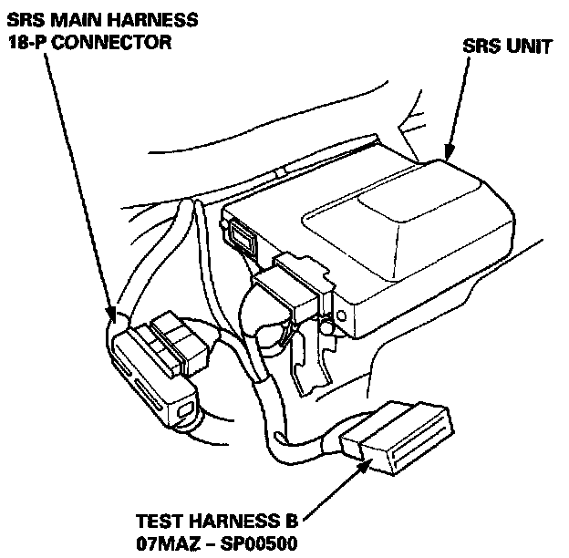
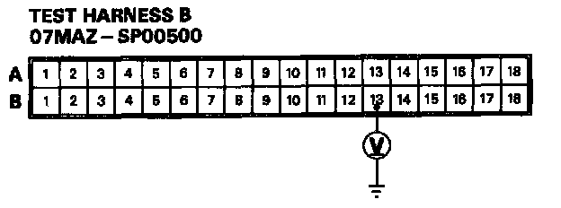

Mode H - Blown SRS No. 25 Fuse, or Open in the Wire
MODE H - BLOWN SRS NO.25 FUSE, OR OPEN IN THE WIRENOTE: The original radio has a coded theft protection circuit. Be sure to get the customer's code number before disconnecting the battery cables.
1. Check the SRS No.25 (10 A) fuse in the under-dash fuse/relay box. If it's OK, go on to step 2.
If it's blown, replace it with a new 10 A fuse, then turn the ignition switch ON (II):
- If the fuse doesn't blow, go on to step 2.
- If the fuse blows, troubleshoot as necessary to find the short.
2. Disconnect the battery negative cable and then the positive cable. Then connect the short connector(s) (RED) to the airbag(s).

3. Connect Test Harness B between the SAS unit and the SRS main harness 18-P connector.
4. Reconnect the positive and negative cable to the battery.

5. Measure the voltage between the B13 terminal (+) and body ground (-) with the ignition switch ON (II).
- If there is battery voltage, the SRS unit is faulty. Replace it and recheck the voltages according to the chart. SRS Indicator Light Doesn't Go Off
- If there is less than battery voltage, the SRS main harness is faulty. Replace it and recheck the voltages according to the chart.SRS Indicator Light Doesn't Go Off